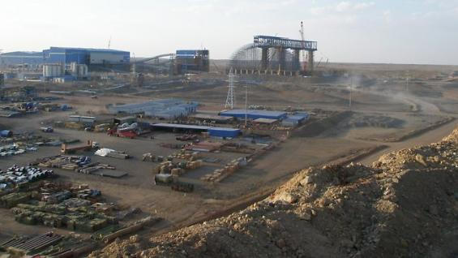
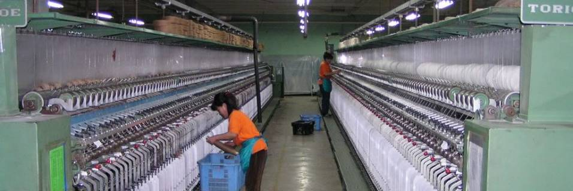
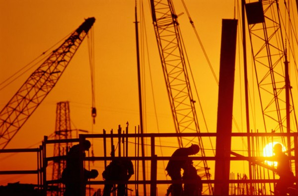
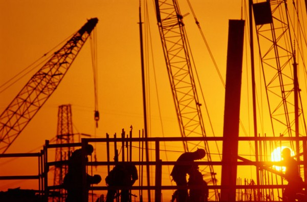

Industry
Mongolia depended almost exclusively on livestock herding until the 1960s. From 1960 to 1980, Council for Mutual Economic Assistance (Comecon) aid to Mongolia focused on the Industrial sector. This had some success, and industrial production caught up with and then overtook agricultural output in the 1970s. By 1990, industry (excluding construction) accounted for 35.6% of GDP compared to 28.9% in 1980. The industrial sector employed 91 thousand people and produced MNT582.3 billion worth of products in 2000. The value of this sector is 23.2% of total GDP. Industrial Output increased by 2.4% in 2000 at current prices from the previous year.
  

Output of selected industrial commodities in 2005: Gold - 24,121.9 kg, Copper Concentrate (35%) - 361,600 tons, Catode Copper (99%) - 2474.5 tons, Molybdenium Concentrate (47%) - 2,528 tons, Crude Oil - 200,700 barrels.
In the first 11 months of 2008, the total industrial output was 1592.9 bln.togrogs at the constant prices 2005, that was more than by 6.1 percent or 91.5 bln.togrogs with the same period of previous year. Compared with the same period of previous year, industrial output has been increased by 0.6 percent 6.6 times for collection, purification and distribution of water, other mining and quarrying, electricity, thermal energy, steam, manufacture of fabricated metal products, expect machinery and equipment, manufacture of textiles, mining of coal and lignite, extraction of peat, manufacture of wood and wooden products, manufacture of food products and beverages, manufacture of furniture, manufacturing, n.e.c tanning, dressing of leather, manufacture of luggage, handbags, saddlery harness, and footwear, extraction of crude petroleum and natural gas, publishing, printing and reproduction of recorded media, production of other non-metallic mineral products, manufacture of chemicals and chemical products, manufacture of electrical machinery and apparatus, manufacture of office, accounting and computing machinery, manufacture of tobacco products, manufacture of coke, refined petroleum products and nuclear fuel etc. divisions; and declined by 1.5-66.7 percent for mining of metal ores, manufacture of paper and paper products, manufacture of basic metals, manufacture of medical precision and optical instruments, watches and clocks, manufacture of wearing apparel, dressing and dyeing of fur, manufacture of rubber and plastic products, manufacture of machinery and equipment n.e.c etc. divisions.
Compared with the same period of previous year, the production of 65.2% of main industrial products increased, while the remaining 34.8% decreased. For the first 11 months of 2008, industrial productivity (at 2005 constant prices) has reached 31.6 million togrogs, increased by 9.0 percent compared with the same period of the previous year. As compared with the same period of the previous year, labor productivity in mining and quarrying sector increased by 0.8 percent, in manufacturing sector increased by 22.0 percent, and in electricity,thermal energy sector increased by 5.6 percent respectively.
Production of main items of industrial products, electricity, thermal energy coal,distribution of water, crude oil, fluor spar concentrate, meat, small intestine, sausage, sour milk and yoghurt, bread, bakery products, macaroni noodles, spirit, alcoholicbeverages, beer, pure water, juice, cigarettes, carpet, medical tablets, lime, articles of ironconcrete, plastering mortar, lather panel, metal steel, metal foundries etc. increased by volume; copper concentrate with 35%,molybdenum concentrate with, 47 %, gold, zincum concentrate, flour, sweets, wine, copper, injection, solid concrete, metal sleeper steel casting, disposable injection, candle etc. decreased by volume. In the first 11 months of 2008, production of industry (at current prices) on 2733.6 bln.togrogs sold at domestic and foreign markets. According to the guidelines for Mongolia's economic and social development in 2008, it was reflected to be that processed meat 19.0 thousand ton, flour domestic supply of 43%, processed milk 25.9 million liter, cement production 300.0 housand ton, briquette production 150.0 thousand tonn. For the first 11 months of this year, processed meat was 10.1 thousand tonn, processed milk was 6.5 million liter, cement production was 187.6 thousand tonn, briquette production was 2.3 thousand tonn, and flour domestic supply was 30.3%.
(Source: Bank of Mongolia, National Statistical Office, Ministry of Industry and Trade of Mongolia)